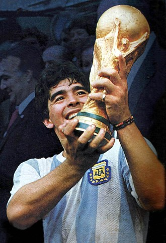

DIEGO MARADONA

Personal information
Full name: Diego Armando Maradona
Date of birth; 30 October 1960
Place of birth: Lanús, Argentina
Date of death: 25 November 2020 (aged 60)
Place of death: Dique Luján, Argentina
Height: 1.65 m (5 ft 5 in)
Position(s): Attacking midfielder, second striker
Team Information
Youth career
1969–1976 Argentinos Juniors
Senior career*
Years Team Apps (Gls)
1976–1981 Argentinos Juniors 166 (116)
1981–1982 Boca Juniors 40 (28)
1982–1984 Barcelona 36 (22)
1984–1991 Napoli 188 (81)
1992–1993 Sevilla 26 (5)
1993–1994 Newell's Old Boys 5 (0)
1995–1997 Boca Juniors 30 (7)
Total 491 (259)
International career
1977–1979 Argentina U20 15 (8)
1977–1994 Argentina 91 (34)
Managerial career
1994 Deportivo Mandiyú
1995 Racing Club
2008–2010 Argentina
2011–2012 Al-Wasl
2013–2017 Deportivo Riestra (assistant)
2017–2018 Fujairah
2018–2019 Dorados de Sinaloa
2019–2020 Gimnasia de La Plata